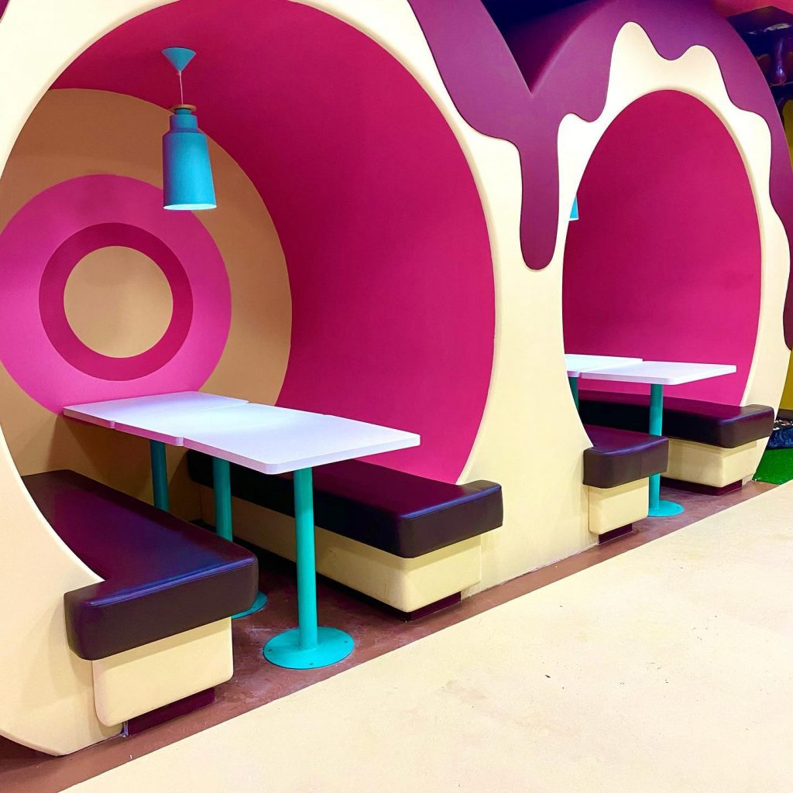
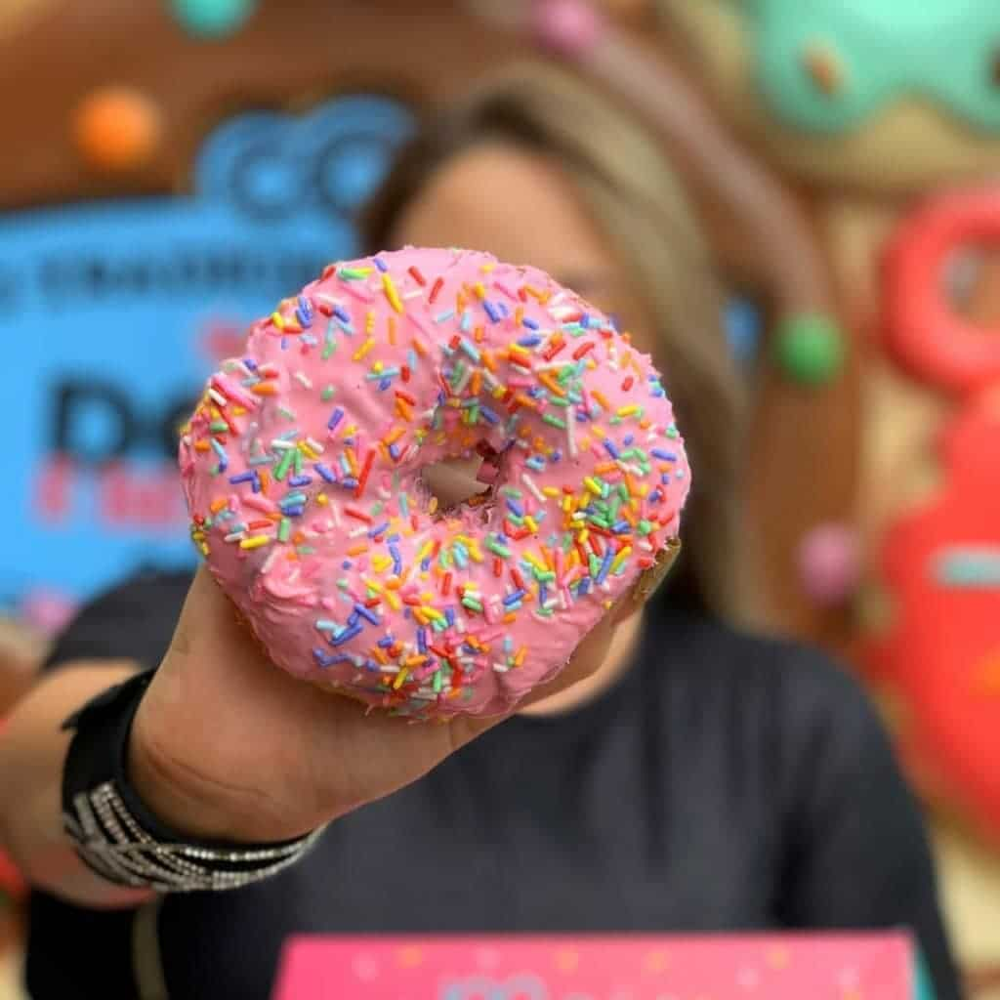
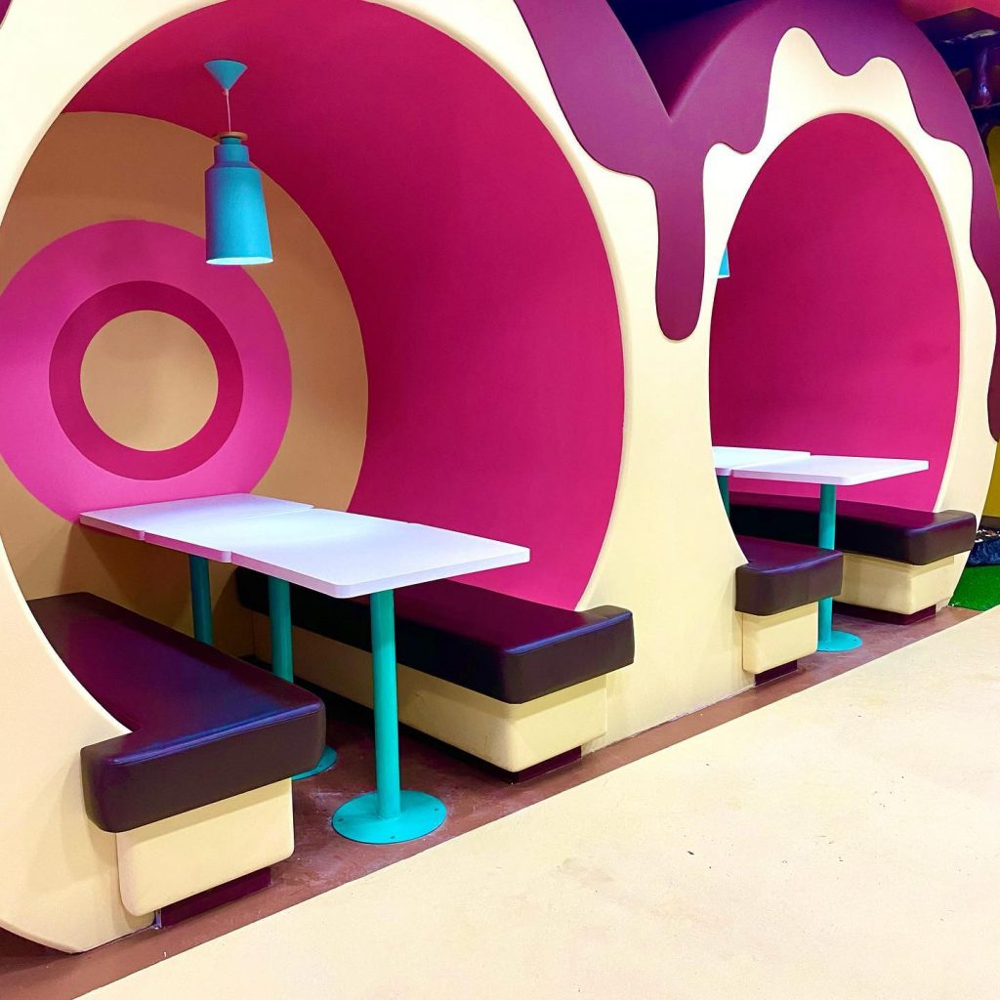
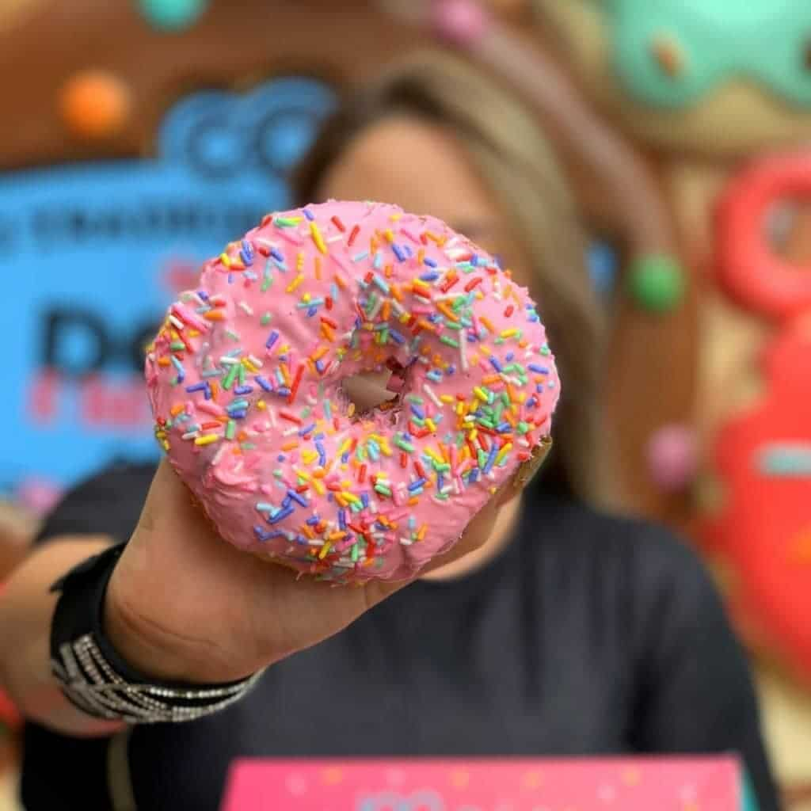

PRIMEIRA LOJA TEMÁTICA DE DONUT'S DO BRASIL CHEGA EM GUARULHOS!
A MAIOR UNIDADE d’O Tradicionalíssimo é uma loja completamente
temática de Donuts, que conta com atrações como Balanço de donuts,
Chuva de donuts, entre outras. É o lugar perfeito para se deliciar
com um Donut fresquinho e tirar fotos incríveis para postar nas redes sociais.
 


